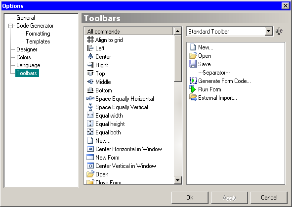

On this pane you can change Koda's toolbars. You can have up to 5 toolbars, each one fully customizable. By default there are two standard toolbars: “Standard Toolbar” and “Functions”. The remaining three are originally empty.
When you select the desired toolbar from combo, right list changes to toolbar's content. To add new commands to selected toolbar, drag it from left list and drop it into the right one. To remove commands, do it backwards. A special —Separator— item inserts a separator on toolbar.
The button at right of combo allows you to rename the selected toolbar.